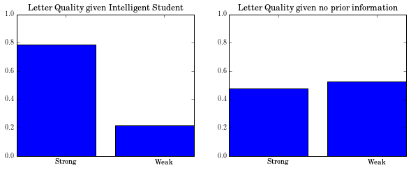

Gibbs sampling
Contents
Gibbs sampling#
Programmatic introduction
toc: true
badges: true
comments: true
author: Nipun Batra
categories: [ML]
Imports#
import networkx as nx
import itertools
from matplotlib import rc
rc("font", family="serif", size=12)
rc("text", usetex=True)
import daft
import random
import requests
import numpy as np
from IPython.display import HTML
import matplotlib.pyplot as plt
import matplotlib
%matplotlib inline
Defining the network#
network={
"V": ["Letter", "Grade", "Intelligence", "SAT", "Difficulty"],
"E": [["Intelligence", "Grade"],
["Difficulty", "Grade"],
["Intelligence", "SAT"],
["Grade", "Letter"]],
"Vdata": {
"Letter": {
"ord": 4,
"numoutcomes": 2,
"vals": ["weak", "strong"],
"parents": ["Grade"],
"children": None,
"cprob": {
"['A']": [.1, .9],
"['B']": [.4, .6],
"['C']": [.99, .01]
}
},
"SAT": {
"ord": 3,
"numoutcomes": 2,
"vals": ["lowscore", "highscore"],
"parents": ["Intelligence"],
"children": None,
"cprob": {
"['low']": [.95, .05],
"['high']": [.2, .8]
}
},
"Grade": {
"ord": 2,
"numoutcomes": 3,
"vals": ["A", "B", "C"],
"parents": ["Difficulty", "Intelligence"],
"children": ["Letter"],
"cprob": {
"['easy', 'low']": [.3, .4, .3],
"['easy', 'high']": [.9, .08, .02],
"['hard', 'low']": [.05, .25, .7],
"['hard', 'high']": [.5, .3, .2]
}
},
"Intelligence": {
"ord": 1,
"numoutcomes": 2,
"vals": ["low", "high"],
"parents": None,
"children": ["SAT", "Grade"],
"cprob": [.7, .3]
},
"Difficulty": {
"ord": 0,
"numoutcomes": 2,
"vals": ["easy", "hard"],
"parents": None,
"children": ["Grade"],
"cprob": [.6, .4]
}
}
}
Drawing the Bayesian Network#
pgm = daft.PGM([8, 8], origin=[0, 0])
pgm.add_node(daft.Node('Difficulty',r"Difficulty",2,6,aspect=3))
pgm.add_node(daft.Node('Intelligence',r"Intelligence",5,6,aspect=3))
pgm.add_node(daft.Node('Grade',r"Grade",3,4,aspect=3))
pgm.add_node(daft.Node('SAT',r"SAT",6,4,aspect=3))
pgm.add_node(daft.Node('Letter',r"Letter",4,2,aspect=3))
for node in network['Vdata']:
parents=network['Vdata'][node]['parents']
if parents is not None:
for parent in parents:
pgm.add_edge(parent, node)
pgm.render()
<matplotlib.axes._axes.Axes at 0x10e58b110>
Finding the Markov blanket of a node#
def find_markov_blanket(node,network):
'''
Find the Markov Blanket of the node in the given network
Markov Blanket is given by:
1. The parents of the node
2. The children of the node
3. The parents of the children of the node
'''
mb=[]
#Finding the parents of the node
parents=network['Vdata'][node]['parents']
if parents is not None:
mb.append(parents)
#Finding children of the node
children=network['Vdata'][node]['children']
if children is not None:
mb.append(children)
#Finding parent of each node
for child in children:
parents_child=network['Vdata'][child]['parents']
if parents is not None:
mb.append(parents)
#Flattening out list of lists
mb=list(itertools.chain(*mb))
#Removing repeated elements
mb=list(set(mb))
return mb
find_markov_blanket('Grade',network)
['Difficulty', 'Letter', 'Intelligence']
Gibbs Sampling Procedures#
Assigning a random state to a node in the network#
def pick_random(node,network):
'''
Assigns a random state to a given node
N
'''
num_outcomes=network['Vdata'][node]["numoutcomes"]
random_index=random.randint(0,num_outcomes-1)
return network['Vdata'][node]["vals"][random_index]
pick_random('SAT',network)
'lowscore'
Pick a random non evidence node to the update in the current iteration#
def pick_random_non_evidence_node(non_evidence_nodes):
return non_evidence_nodes[random.randint(0,len(non_evidence_nodes)-1)]
Update the value of a node given assignment in previous iteration#
def get_next_value(node, network,simulation):
parents_current_node_to_update=network['Vdata'][node]['parents']
if parents_current_node_to_update is None:
#The node has no parent and we can update it based on the prior
cumsum=np.cumsum(network['Vdata'][node]["cprob"])
else:
#Find the row corresponding to the values of the parents in the previous iteration
#NB We need to maintain the order, so we will do it
values_parents=[simulation[-1][parent] for parent in parents_current_node_to_update]
row=network['Vdata'][node]["cprob"][str(values_parents)]
cumsum=np.cumsum(row)
choice=random.random()
index=np.argmax(cumsum>choice)
return network['Vdata'][node]["vals"][index]
Main procedure: Iteratively pick up a non evidence node to update#
def gibbs_sampling(network, evidence, niter=2):
simulation=[]
nodes=network['V']
non_evidence_nodes=[node for node in nodes if node not in evidence.keys()]
#First iteration random value for all nodes
d={}
for node in nodes:
d[node]=pick_random(node,network)
#Put evidence
for node in evidence:
d[node]=evidence[node]
simulation.append(d.copy())
#Now iterate
for count in xrange(niter):
#Pick up a random node to start
current_node_to_update=pick_random_non_evidence_node(non_evidence_nodes)
d[current_node_to_update]=get_next_value(current_node_to_update,network,simulation)
simulation.append(d.copy())
return simulation
Illustration 1#
Distribution of Letter given that the student is Intelligent#
iterations=int(1e4)
sim=gibbs_sampling(network, {"Intelligence":"high"},iterations)
Removing first 10% samples
after_removing_burnt_samples=sim[iterations/10:]
count={val:0 for val in network['Vdata']['Letter']['vals']}
Finding the distribution of letter
for assignment in after_removing_burnt_samples:
count[assignment['Letter']]+=1
Counts
count
{'strong': 7061, 'weak': 1940}
Counts to Probabilites
probabilites={}
for l in count:
probabilites[l]=count[l]*1.0/(.90*iterations)
probabilites
{'strong': 0.7845555555555556, 'weak': 0.21555555555555556}
Wait a min! What about the marginal distribution of Letter given NO evidence#
iterations=int(1e4)
sim=gibbs_sampling(network, {},iterations)
after_removing_burnt_samples=sim[iterations/10:]
count={val:0 for val in network['Vdata']['Letter']['vals']}
for assignment in after_removing_burnt_samples:
count[assignment['Letter']]+=1
probabilites_no_evidence={}
for l in count:
probabilites_no_evidence[l]=count[l]*1.0/(.90*iterations)
probabilites_no_evidence
{'strong': 0.4766666666666667, 'weak': 0.5234444444444445}
How does the evidence about “Intelligent” student affect the quality of letters?#
plt.figure(figsize=(10, 8))
plt.subplot(2,2,1)
plt.bar(range(2),[probabilites['strong'],probabilites['weak']])
plt.xticks([0.5,1.5],['Strong','Weak'])
plt.title('Letter Quality given Intelligent Student')
plt.ylim((0,1.0))
plt.subplot(2,2,2)
plt.bar(range(2),[probabilites_no_evidence['strong'],probabilites_no_evidence['weak']])
plt.xticks([0.5,1.5],['Strong','Weak'])
plt.title('Letter Quality given no prior information')
plt.ylim((0,1.0));
